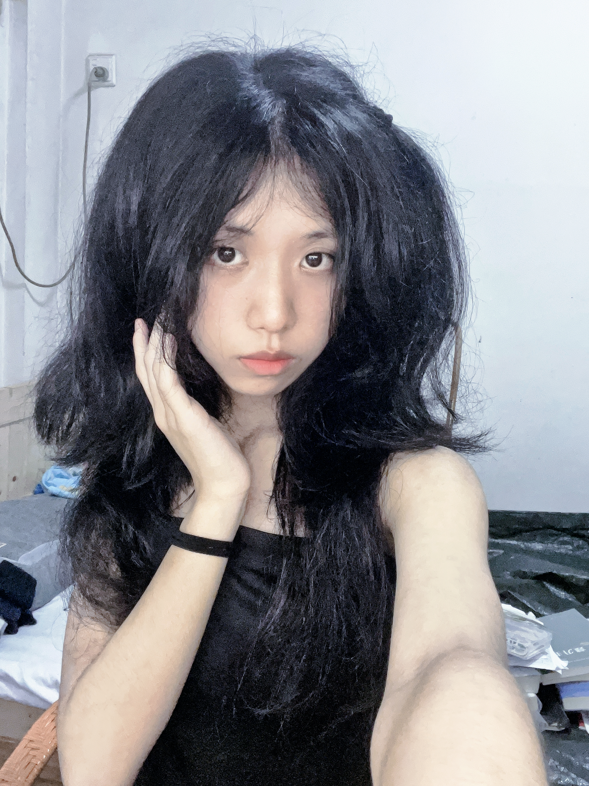
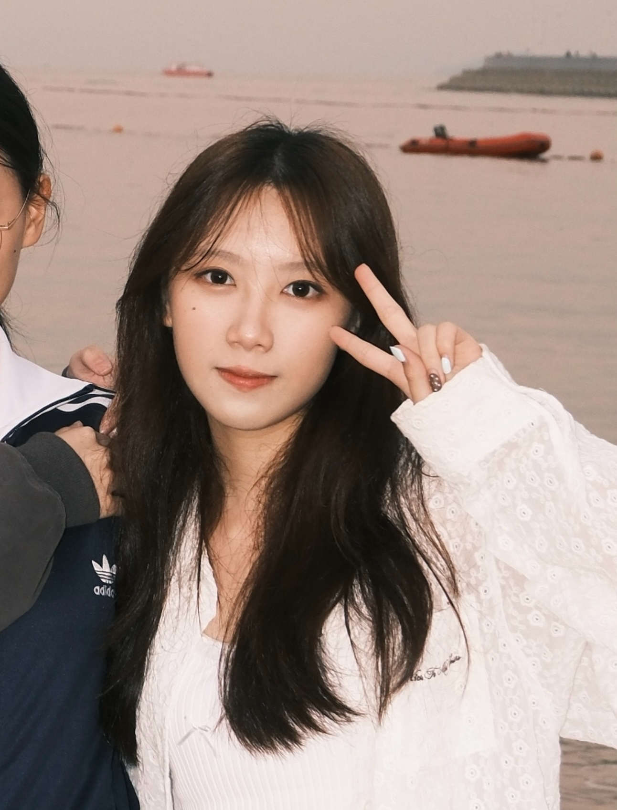
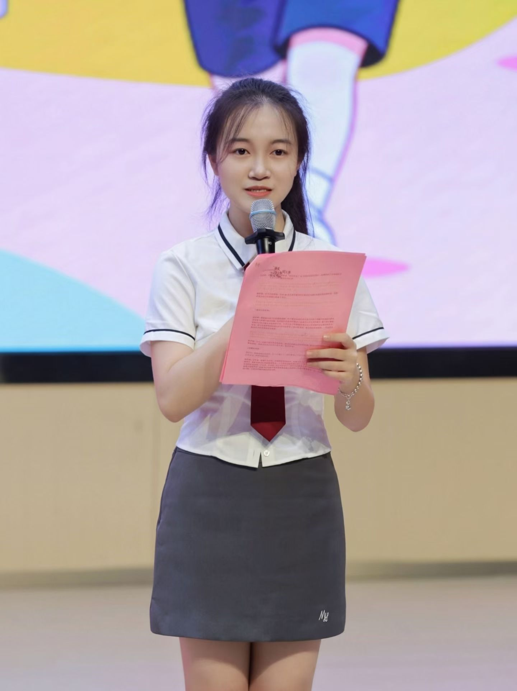

Education & Appointments
2025.05 – Present School of Psychology, Shenzhen University
Assistant Professor, Doctoral Supervisor2021.04 – 2025.04 State Key Laboratory of Cognitive Neuroscience and Learning, Beijing Normal University
Cognitive Neuroscience, Postdoctoral Fellow, Mentor: Yong He2019.03 – 2020.03 Montreal Neurological Institute, McGill University
Neuroscience, CSC-supported Visiting Ph.D. Student, Supervisor: Boris Bernhardt2013.09 – 2021.01 School of Biological Science and Medical Engineering, Beihang University
Biomedical Engineering, Integrated Graduate Program, Ph.D., Supervisor: Shuyu Li2009.09 – 2013.06 School of Biomedical Engineering, Tianjin Medical University
Biomedical Engineering, Bachelor of Engineering
Team
Postdoc

Dicheng Chen
from 2026 Human brain imaging analysis, Human brain metabolic connectome, Magnetic resonance spectroscopy imaging
PhD Student
Master Student

Huan Yu
from 2025 7T fMRI, Seg/Integration

Ke Zheng
from 2026 3T fMRI, Seg/Integration balance
Undergraduate Student

Wanru Xiong
from 2026
Xinqi Wu
from 2026

Xuanyu Lin
from 2026
Zining Lu
from 2026

Yiqing Lin
from 2026